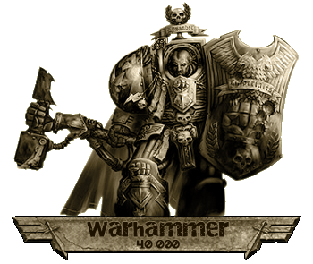

|
Warhammer 40.000
A 40. évezred univerzuma.
|
Beavatási
rítusok, 1 rész - Ez a
cikk bemtatja az ûrgárdisták teremtését, és részletesen ismertet minden
beültetett mesterséges szervet, amely a gárdisták emberfeletti mivoltáért
felelõs.
(New)
A Sötét
Angyalok - A Dark Angels ûrgárdista
rendház és alapító primarchájuk történetét
beszéli el ez az
írás.
A Behemoth Tyranida Kaptárflotta hiteles története
- A Tyranida faj elsõ
felbukkanását és az ezt követõ háborúkat
meséli el ez terjedelmes cikk (elsõ rész).
|
 |
A
Behemoth Tyranida Kaptárflotta hiteles története,
2 rész. - Az elõzõ írás
folytatása,
és egyben befejezõ része.
Necromunda
bolyvárosai - Részletes bemutató, melybõl
a Necromundán található bolyvárosok felépítését
ismerhetjük meg, valamint bõvebben foglalkozik a
legnagyobb bollyal: Primussal.
Primus
Boly Házai - Necromunda bolygóján
található Primus bolyváros uralkodó házait
mutatja be ez a cikk.
Impérium
- Egy rövid írás, amely felületesen
bemutatja az emberiség birodalmát, az Impériumot.
A 40. évezred
fegyverei - Egy rövid összefoglaló
a galaxisban leggyakrabban megtalálható és
néhány egzotikus kézifegyverrõl.
Az
Oroszlán és a Farkas - Egy
rövid történet, mely a Sötét Angyalok
és az Ûrfarkasok közti ellentét gyökereit
meséli el.
Mesék az
Angyalokról - A fenti Sötét Angyalok történetét
bemutató cikk kiegészítéseként értelmezhetõ,
rövid történetek gyûjteménye.
Kellemes olvasgatást a cikkekhez!
- Rince
|